Функции
Атрибут — свойство некоторой сущности. Часто называется полем таблицы.
Домен атрибута — множество допустимых значений, которые может принимать атрибут.
Кортеж — конечное множество взаимосвязанных допустимых значений атрибутов, которые вместе описывают некоторую сущность (строка таблицы).
Отношение — конечное множество кортежей (таблица).
Схема отношения — конечное множество атрибутов, определяющих некоторую сущность. Иными словами, это структура таблицы, состоящей из конкретного набора полей.
Нормальная форма — требование, предъявляемое к структуре таблиц в теории реляционных баз данных для устранения из базы избыточных функциональных зависимостей между атрибутами (полями таблиц).
Метод нормальных форм (НФ) состоит в сборе информации о объектах решения задачи в рамках одного отношения и последующей декомпозиции этого отношения на несколько взаимосвязанных отношений на основе процедур нормализации отношений.
Исключить избыточное дублирование данных, которое является причиной аномалий, возникших при добавлении, редактировании и удалении кортежей(строк таблицы).
Первая нормальная форма (1НФ) - это обычное отношение. Отношение в 1НФ обладает следующими свойствами:
В отношении нет одинаковых кортежей. Кортежи не упорядочены. Атрибуты не упорядочены. Все значения атрибутов атомарны.
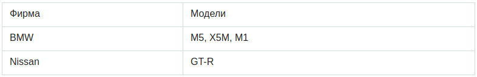
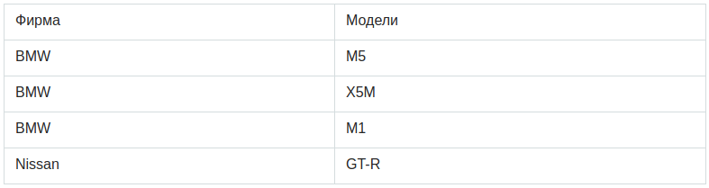
Отношение находится во 2НФ, если оно находится в 1НФ и каждый не ключевой атрибут зависит от выбраного ключа.
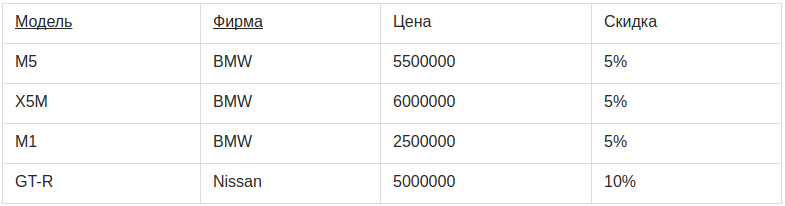
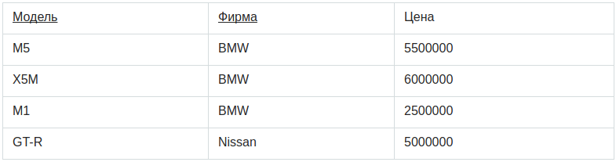
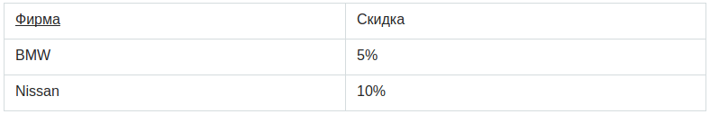
Отношение находится в 3НФ, когда находится во 2НФ и и все неключевые атрибуты взаимно независимы.
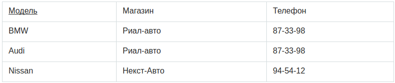
| Магазин | Телефон |
|---|---|
| Риал-авто | 87-33-98 |
| Некст-Авто | 94-54-12 |
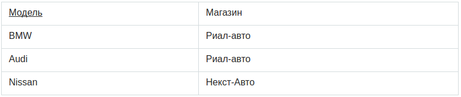
Определение 3НФ не совсем подходит для следующих отношений:
Отношение находится в нормальной форме Бойса-Кодда (НФБК) тогда и только тогда, когда значения всех функциональных зависимостей являются потенциальными ключами.
Предположим, рассматривается отношение, представляющее данные о бронировании стоянки на день
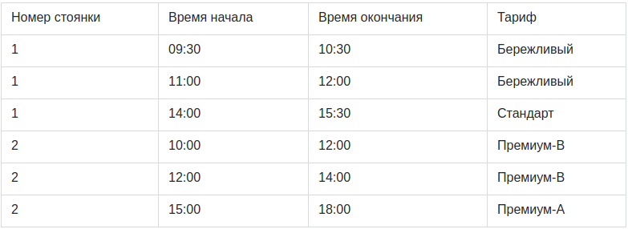
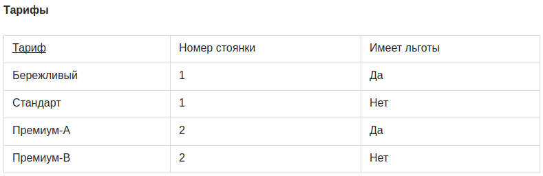
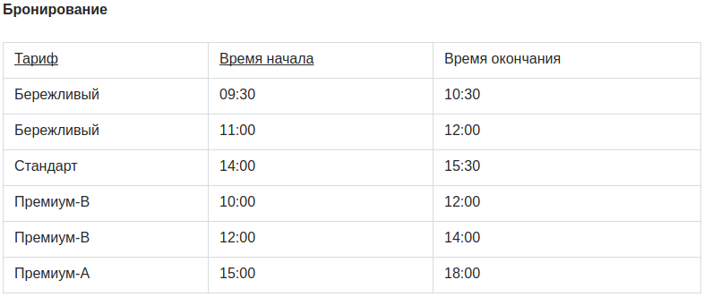
Отношение находится в 4НФ, если оно находится в НФБК и все нетривиальные многозначные зависимости фактически являются функциональными зависимостями от ее потенциальных ключей.
Предположим, что рестораны производят разные виды пиццы, а службы доставки ресторанов работают только в определенных районах города.
Такая переменная отношения не соответствует 4НФ, так как существует следующая многозначная зависимость:
{Ресторан} → {Вид пиццы}
{Ресторан} → {Район доставки}
Декомпозиция:
({Ресторан, Вид пиццы, Район доставки} → Цена)
Отношения находятся в 5НФ, если оно находится в 4НФ и отсутствуют сложные зависимые соединения между атрибутами.
Если «Атрибут зависит от «Атрибута_2», а «Атрибут_2» в свою очередь зависит от «Атрибута_3», а «Атрибут_3» зависит от «Атрибута_1», то все три атрибута обязательно входят в один кортеж.
Переменная находится в 6НФ тогда и только тогда, когда она неприводима, то есть не может быть подвергнута дальнейшей декомпозиции без потерь.
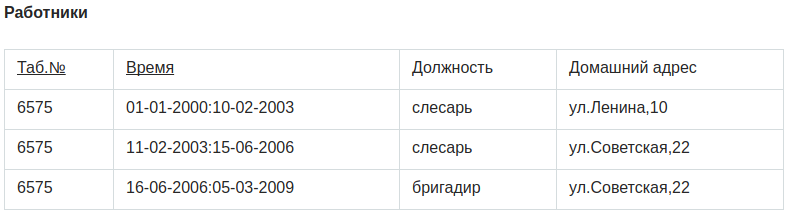
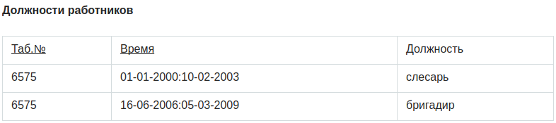
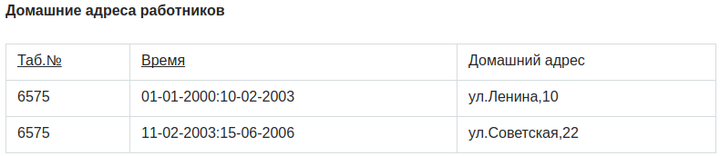
SELECT
a.col1
b.col1
FROM
table1 AS a [INNER, LEFT, RIGHT ....] JOIN table2 AS b
ON a.id = b.id [(AND|OR) condition....]
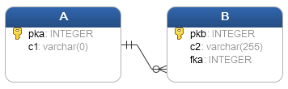
SELECT
A.pka,
A.c1,
B.pkb,
B.c2
FROM
A
INNER JOIN B ON A .pka = B.fka;
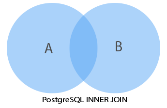
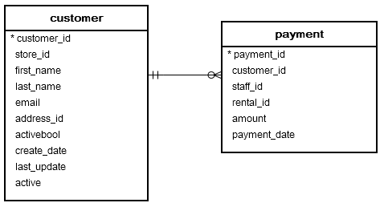
SELECT
customer.customer_id,
first_name,
last_name,
email,
amount,
payment_date
FROM
customer
INNER JOIN payment ON payment.customer_id = customer.customer_id;
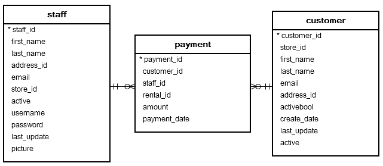
SELECT
customer.customer_id,
customer.first_name customer_first_name,
customer.last_name customer_last_name,
customer.email,
staff.first_name staff_first_name,
staff.last_name staff_last_name,
amount,
payment_date
FROM
customer
INNER JOIN payment ON payment.customer_id = customer.customer_id
INNER JOIN staff ON payment.staff_id = staff.staff_id;
SELECT
A.pka,
A.c1,
B.pkb,
B.c2
FROM
A
LEFT JOIN B ON A .pka = B.fka;
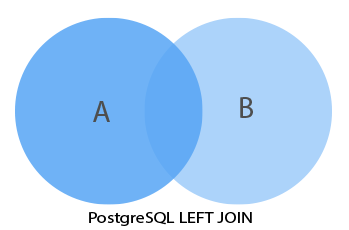
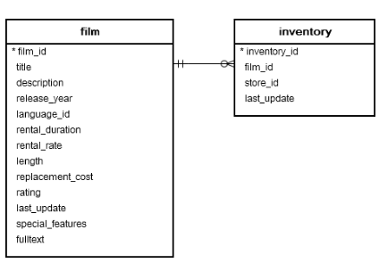
SELECT
film.film_id,
film.title,
inventory_id
FROM
film
LEFT JOIN inventory ON inventory.film_id = film.film_id;
То же что и LEFT, только RIGHT
SELECT * FROM A
FULL [OUTER] JOIN B on A.id = B.id;
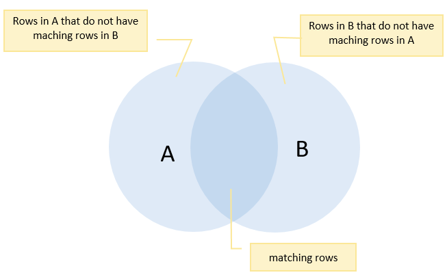
# SELECT * FROM departments;
department_id | department_name
---------------+-----------------
1 | Sales
2 | Marketing
3 | HR
4 | IT
5 | Production
(5 rows)
# SELECT * FROM employees;
employee_id | employee_name | department_id
-------------+-----------------+---------------
1 | Bette Nicholson | 1
2 | Christian Gable | 1
3 | Joe Swank | 2
4 | Fred Costner | 3
5 | Sandra Kilmer | 4
6 | Julia Mcqueen |
(6 rows)
SELECT
employee_name,
department_name
FROM
employees e
FULL OUTER JOIN departments d ON d.department_id = e.department_id;
employee_name | department_name
—---------------+---------------—
Bette Nicholson | Sales
Christian Gable | Sales
Joe Swank | Marketing
Fred Costner | HR
Sandra Kilmer | IT
Julia Mcqueen | NULL
NULL | Production
CREATE TABLE T1 (label CHAR(1) PRIMARY KEY);
CREATE TABLE T2 (score INT PRIMARY KEY);
INSERT INTO T1 (label)
VALUES
('A'),
('B');
INSERT INTO T2 (score)
VALUES
(1),
(2),
(3);
SELECT
*
FROM
T1
CROSS JOIN T2;
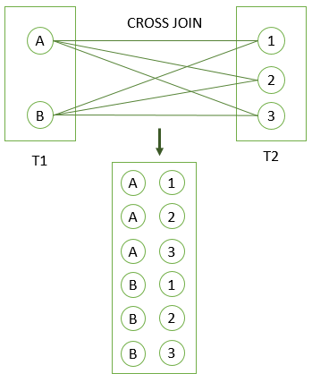
Тоже самое
SELECT *
FROM T1, T2;
SELECT *
FROM T1
INNER JOIN T2 ON TRUE;
SELECT *
FROM T1
NATURAL [INNER, LEFT, RIGHT] JOIN T2;
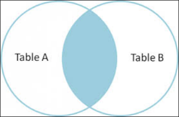
CREATE TABLE categories (
category_id serial PRIMARY KEY,
category_name VARCHAR (255) NOT NULL
);
CREATE TABLE products (
product_id serial PRIMARY KEY,
product_name VARCHAR (255) NOT NULL,
category_id INT NOT NULL,
FOREIGN KEY (category_id) REFERENCES category (category_id)
);
SELECT
*
FROM
products
NATURAL JOIN categories;
category_id | product_id | product_name | category_name
-------------+------------+-----------------+---------------
1 | 1 | iPhone | Smart Phone
1 | 2 | Samsung Galaxy | Smart Phone
2 | 3 | HP Elite | Laptop
2 | 4 | Lenovo Thinkpad | Laptop
3 | 5 | iPad | Tablet
3 | 6 | Kindle Fire | Tablet
(6 rows)
UPDATE A
SET A.c1 = expresion
FROM B
WHERE A.c2 = B.c2;
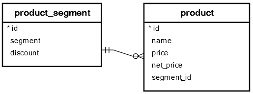
UPDATE product
SET net_price = price - price * discount
FROM
product_segment
WHERE
product.segment_id = product_segment.id;
SELECT
column_1,
column_2
FROM
tbl_name
ORDER BY
column_1 ASC,
column_2 DESC;
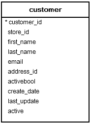
SELECT
first_name,
last_name
FROM
customer
ORDER BY
first_name ASC,
last_name DESC;
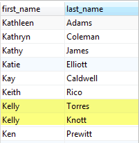
SELECT count(*) FROM sometable;
SELECT * FROM items_sold;
make | model | sales
-------+-------+-------
Foo | GT | 10
Foo | Tour | 20
Bar | City | 15
Bar | Sport | 5
(4 rows)
SELECT make, model, GROUPING(make,model), sum(sales) FROM items_sold GROUP BY ROLLUP(make,model);
make | model | grouping | sum
-------+-------+----------+-----
Foo | GT | 0 | 10
Foo | Tour | 0 | 20
Bar | City | 0 | 15
Bar | Sport | 0 | 5
Foo | | 1 | 30
Bar | | 1 | 20
| | 3 | 50
(7 rows)
SELECT column_1, aggregate_function(column_2)
FROM tbl_name
GROUP BY column_1;
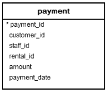
SELECT
customer_id,
SUM (amount)
FROM
payment
GROUP BY
customer_id;
SELECT
customer_id,
SUM (amount)
FROM
payment
GROUP BY
customer_id
ORDER BY
SUM (amount) DESC;
SELECT
column_1,
aggregate_function (column_2)
FROM
tbl_name
GROUP BY
column_1
HAVING
condition;
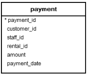
SELECT
customer_id,
SUM (amount)
FROM
payment
GROUP BY
customer_id
HAVING
SUM (amount) > 200;
SELECT
column_1,
column_2
FROM
tbl_name_1
UNION
SELECT
column_1,
column_2
FROM
tbl_name_2;
SELECT *
FROM
sales2007q1
UNION
SELECT *
FROM
sales2007q2;
SELECT *
FROM
sales2007q1
UNION ALL
SELECT *
FROM
sales2007q2;
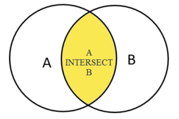
SELECT
column_list
FROM
A
INTERSECT
SELECT
column_list
FROM
B;
CREATE TABLE employees (
employee_id serial PRIMARY KEY,
employee_name VARCHAR (255) NOT NULL
);
CREATE TABLE keys (
employee_id INT PRIMARY KEY,
effective_date DATE NOT NULL,
FOREIGN KEY (employee_id) REFERENCES employees (employee_id)
);
CREATE TABLE hipos (
employee_id INT PRIMARY KEY,
effective_date DATE NOT NULL,
FOREIGN KEY (employee_id) REFERENCES employees (employee_id)
);
SELECT
employee_id
FROM
keys
INTERSECT
SELECT
employee_id
FROM
hipos;
employee_id
-------------
5
2
(2 rows)
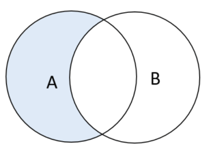
SELECT column_list
FROM A
WHERE condition_a
EXCEPT
SELECT column_list
FROM B
WHERE condition_b;
SELECT
distinct inventory.film_id,
title
FROM
inventory
INNER JOIN film ON film.film_id = inventory.film_id
ORDER BY title;
SELECT
film_id,
title
FROM
film
EXCEPT
SELECT
DISTINCT inventory.film_id,
title
FROM
inventory
INNER JOIN film ON film.film_id = inventory.film_id